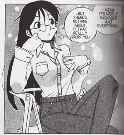
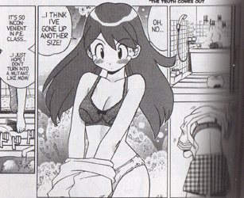
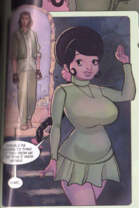
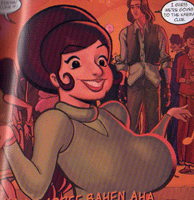

I am having a sick day today and while I’m tempted to use that as an out if I later need to claim I was not in my right mind when writing this, it’s something I’ve been thinking about all weekend. The title of the post is my way of apologizing to John Jakala for mentioning the problem with Bombaby he brought to my attention without actually seeking out the link (here I do plead sick), and also because “grotesque anatomy” is an awfully good title he’s not using anymore.
While it wasn’t my inspiration here, we saw The Aviator Friday night and basically enjoyed it (though I thought the ending especially was needlessly heavy-handed) and also bought the first volume of Sgt. Frog. One thing leads to another, and I found myself buying and devouring volumes 2 and 3 before the weekend was over. It’s a book practically everyone had recommended and I found myself just as charmed as many other bloggers have already been, but on returning home with the first book I saw that Lyle had qualms about the portrayal of sexualized women. This made me curious since plenty of posts on this blog have been me complaining about just such things, and so I am surprised to say I’m not going to do so here. Sure, there are a lot of panty shots (what’s up with Natsumi’s basketball uniform?) and weird breast things going on in Sgt. Frog and they just didn’t bother me. I’m not sure I can explain why this is and it’s all going to be very idiosyncratic and probably won’t translate well to your experience, which is fine with me. That’s as far as I’m going to go with a disclaimer, but it seemed worth noting that I’m not trying to recreate the scene from The Aviator where the poor professor has to measure various “mammaries” to convince a skeptical ratings board of the acceptability of their prominence in The Outlaw.
Instead what we’ve got in Sgt. Frog is the Hinata family, where 14-year-old Natsumi and her slightly younger brother, Fuyuki, reveal and capture Keroro, a charming little megalomaniac from the planet Keron’s expeditionary invasion force. The head of the Hinata family is Aki, the manga editor mother often absent for weeks at a time, who cements Keroro’s place in the household.

This is Aki’s first appearance, but is characteristic of her depiction as an editor throughout the first three volumes. While this is clearly part of the exploitative representation Lyle and others talked about, it struck me as less objectionable than, say, the scene in Mean Girls where Tina Fey accidentally removed her shirt in front of her students and a coworker. Here, Aki is even dressed in what seems like a work-appropriate outfit and her fervor for manga manifests itself in sexual double entendres, which is a consistent pattern. Because they find this a turn-on, her male subordinates become obsessed with pleasing her, since her professional praise is invariably sexualized. I have to admit, my first thought was that this is a pretty effective system for her, since she gets the results she wants and isn’t necessarily aware she’s a sexual object (and there’s no real textual evidence, since there are no adult romantic roles, that she’s a sexual subject in any meaningful way). The setup reminded me more of something like Groucho Marx’s verbal/sexual jabs, although generally less witty and more obvious. Because this is a light-hearted PG-level comedy, I’m not expecting any sort of examination of the effects female sexuality has on straight male geeks, although it’s something I think about and watch online, even if I don’t often talk about it here. At some level, though, Sgt. Frog is raising those questions, although in a superficial way, and I appreciate that enough that it doesn’t seem ridiculously exploitative to me.
But to be honest, I think a big part of it has to do with the fact that while Aki Hinata has the largest breasts in the book, they’d look positively tiny if she showed up in a standard superhero book from Marvel or DC. Her breasts are large for her slim frame, but not extremely or unrealistically so. And that ties into the reason I’m not disturbed by the focus on shots of young teen Natsumi in her bra:

Natsumi is at an age where her body is changing and, like many girls, she sees this as a betrayal of sorts. In the last panel (reading right-to-left for manga) she says, “I just hope I don’t turn into a mutant like Mom!” While being spied on by a froglike alien isn’t a normal experience, I think discomfort with becoming physically/sexually mature is, and it was refreshing to see it. While Natsumi is often seen as a sexualized creature, whether caught in the panels changing her shirt or in the several instances her underwear makes an appearance, she has no interest in this role. When she has to “age” into an adult body in a later volume, rather than flaunting her physical assets she has to be brainwashed to agree to enter a bikini contest. Though she may look almost physically mature while she manages to capably run the household in her mother’s absence, she clearly still thinks of herself as the sort of person who would prefer to be playing basketball with her school friends. I don’t know how well Sgt. Frog sells with people who aren’t comics bloggers, specifically with the young teen girls who do read lots of manga, I would think that despite the cheesecake aspects of her presentation (and perhaps because of it) Natsumi would be a good object for identification. With fashion standards being what they are now, a lot of girls and young women have to balance the trend to look sexualized or provocative with their own actual sexual interests or lack thereof and the ways they want to present themselves. I know when I was younger I dealt with this basically through denial, cropping off all my hair and wearing huge clothes that cloaked the parts of my body I found awkward, among other less healthy means. I imagine it’s more normal to do what Natsumi does, look a bit sexy or at least be aware they’re being viewed sexually while trying to subvert this through the strength of pure personality.
Would it be better to keep all of this breast-anxiety off-screen? I don’t know. It’s there in Judy Blume books and I assume most young teens see the kinds of bodies on display on MTV or the magazines targeted to them. It’s not a new insight to notice that men’s lifestyle magazines typically have “hot” women on the cover, and that the same is true for women’s magazines. I think that’s something akin to what’s going on here, that Natsumi is definitely being portrayed for the audience that finds a view of a B-cup bra exhilarating while also passing on the more subversive message her own ambivalence toward her body portrays (which I don’t think you’d find as easily in either Maxim or Cosmo Girl). And again, I’m going back to breast size a bit, but since the proportions aren’t so insane, this is not as disturbing to me as finding out that real people find J. Michael Turner characters attractive, even if the character in question is a mere year or two older than Natsumi. It’s also sort of hard for me to believe that these shots of covered, proportional breasts are really so titillating (and I really couldn’t come up with a better word; sorry) in the world in which we live and read.
However, it’s easy to build bad breasts, and that was much of my reaction to Bombaby. I’d considered not buying it because it collects the first three released issues of the series along with the fourth issue, which wasn’t released separately, but I had been planning to buy the book in TPB anyway and figured that the publisher (Amaze Ink, though I’d somehow thought until I looked that it had been Slave Labor) could use the reminder that people will buy collected versions of books, so it’s worth treating both groups fairly. While the covers had been lovely and tempting, I didn’t especially enjoy the interior art and the story was weak, especially in its concluding chapter. I’m sort of sad that there weren’t any endnotes or explanations of what the creator was trying to do with the story, because I really couldn’t tell from the story. Also, isn’t the tutelary deity of Mumbai Mumbadevi, not “the Mumbai devi?” I’m sure they mean the same thing, but it bothered me. Actually a lot of things bothered me, but since it’s that kind of post we’ll focus on the art and the bodies.

Here is protagonist Sangeeta, and while writer/artist Anthony Mazzotta clearly wanted to show her as curvaceous (to suggest something about Indian beauty standards? Again, notes might help) she just looks like she’s pregnant and weirdly shaped on top of that. She has no waist and her torso is frighteningly small. Her clothes look painful and odd. Who wears a microminiskirt with a turtleneck? And she seems awfully happy and calm for someone who avoided being attacked by a gang of thugs only moments before.

And the above shows what happens to Sangeeta when she dances. Apparently her breasts are just two compartments of some sort of bag filled with liquid, since bulk seems to be able to move from one breast to the other when she moves. She still seems unnaturally happy, but I realize it’s a comic convention to avoid reference to the sort of pain swinging breasts of the size many female characters display would cause. Still, this seems pretty extreme to go unnoticed.
This is my last example, but it shows how after changing out of her miniskirt outfit into a t-shirt that is basically the same color (another bad art choice, in my opinion) Sangeeta’s breasts seem to have changed shape yet again, hanging down like separate bags barely attached to her body. Perhapps if I’d been more interested in the story I wouldn’t have spent so much time thinking about how odd and uncomfortable her breasts looked to me, but it’s also possible that’s part of a chicken-and-egg thing. What I’m getting at is that I was willing to give Sgt. Frog some extra slack because it did show off its characters’ breasts (a lot) but did so with breasts that were consistently sized and not unrealistic. Bombaby, while not using Sangeeta’s breasts as explicitly sexual objects, was more objectionable to me because the breasts made no sense in a story that made no sense.
And on that note, I’m going to go to bed so I can get up in the morning and go to work like a healthy(-ish) person and then probably not talk about breasts in this much depth for a very, very long time.
{kind=link}